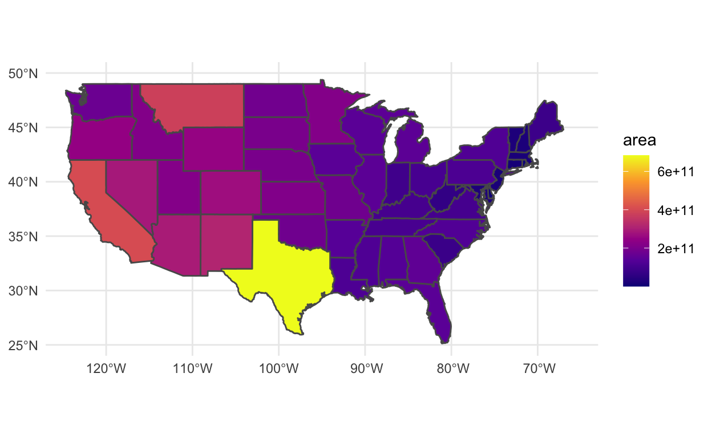

# SEE modeldata package for new datasets
library(tidyverse) # for graphing and data cleaning
library(tidymodels) # for modeling
library(stacks) # for stacking models
library(naniar) # for examining missing values (NAs)
library(lubridate) # for date manipulation
library(moderndive) # for King County housing data
library(DALEX) # for model interpretation
library(DALEXtra) # for extension of DALEX
library(patchwork) # for combining plots nicely
library(dbplyr) # for SQL query "cheating" - part of tidyverse but needs to be loaded separately
library(mdsr) # for accessing some databases - goes with Modern Data Science with R textbook
library(RMySQL) # for accessing MySQL databases
library(RSQLite) # for accessing SQLite databases
library(plotly) # for interactive plots
#mapping
library(maps) # for built-in maps
library(sf) # for making maps using geom_sf
library(ggthemes) # Lisa added - I like theme_map() for maps :)
#tidytext
library(tidytext) # for text analysis, the tidy way!
library(textdata)
library(reshape2)
library(wordcloud) # for wordcloud
library(stopwords)
Here is my GitHub link.
We will use the King County housing data.
Choose 3 new observations and do the following for each observation: * Construct a break-down plot using the default ordering. Interpret the resulting graph. Which variables contribute most to each observations prediction? * Construct a SHAP graph and interpret it. Does it tell a similar story to the break-down plot? * Construct a LIME graph (follow my code carefully). How close is each original prediction to the prediction from the local model? Interpret the result. You can also try using fewer or more variables in the local model than Lisa used in the example.
set.seed(494)
house_split <- initial_split(house_prices,
prop = .75)
house_train <- training(house_split)
house_test <- testing(house_split)
house_ranger_recipe <-
recipe(formula = log_price ~ .,
data = house_train) %>%
step_date(date,
features = "month") %>%
update_role(all_of(c("id",
"date")),
new_role = "evaluative")
house_ranger_spec <-
rand_forest(mtry = 6,
min_n = 10,
trees = 200) %>%
set_mode("regression") %>%
set_engine("ranger")
house_ranger_workflow <-
workflow() %>%
add_recipe(house_ranger_recipe) %>%
add_model(house_ranger_spec)
set.seed(494)
house_ranger_fit <- house_ranger_workflow %>%
fit(house_train)
house_rf_explain <-
explain_tidymodels(
model = house_ranger_fit,
data = house_train %>% select(-log_price),
y = house_train %>% pull(log_price),
label = "Random Forest"
)
Preparation of a new explainer is initiated
-> model label : Random Forest
-> data : 16210 rows 20 cols
-> data : tibble converted into a data.frame
-> target variable : 16210 values
-> predict function : yhat.workflow will be used ( [33m default [39m )
-> predicted values : No value for predict function target column. ( [33m default [39m )
-> model_info : package tidymodels , ver. 0.1.2 , task regression ( [33m default [39m )
-> predicted values : numerical, min = 5.020731 , mean = 5.665231 , max = 6.696937
-> residual function : difference between y and yhat ( [33m default [39m )
-> residuals : numerical, min = -0.3328418 , mean = 0.0004361088 , max = 0.2467335
[32m A new explainer has been created! [39m set.seed(494)
new_obs1 <- house_test %>% slice(4239)
new_obs2 <- house_test %>% slice(294)
new_obs3 <- house_test %>% slice(3)
10^(new_obs1$log_price)
[1] 47000010^(new_obs2$log_price)
[1] 42500010^(new_obs3$log_price)
[1] 4e+05set.seed(494)
house_pp_rf1 <- predict_parts(explainer = house_rf_explain,
new_observation = new_obs1,
type = "break_down")
house_pp_rf2 <- predict_parts(explainer = house_rf_explain,
new_observation = new_obs2,
type = "break_down")
house_pp_rf3 <- predict_parts(explainer = house_rf_explain,
new_observation = new_obs3,
type = "break_down")
plot(house_pp_rf1)
plot(house_pp_rf2)
plot(house_pp_rf3)
The average log price remains the same across all observations, as it is the average log price when applied to all of the training data. This log price is 5.665, or $462,381. We see that holding latitude constant at 47.698 affects the overall average price the most, and increases the log price by 0.084, or $98,666.95. The predicted log price for this observation is 5.653, or $449,779.90.
The second plot shows us that fixing our latitude at 47.5197 decreases the average log price by 0.051, or $51,231.30. We also see that holding this latitude constant affects the price the most. Finally, the predicted log price for this observation is 5.599, or $397,191.50.
The third plot shows us that fixing our latitude at 47.6127 increases the log price by 0.109, or $131,911.10. Holding this latitude constant affects the predicted price the most. This predicted log price is 5.59, or $389,045.10.
house_rf_shap1 <-predict_parts(explainer = house_rf_explain,
new_observation = new_obs1,
type = "shap",
B = 10
)
house_rf_shap2 <-predict_parts(explainer = house_rf_explain,
new_observation = new_obs2,
type = "shap",
B = 10
)
house_rf_shap3 <-predict_parts(explainer = house_rf_explain,
new_observation = new_obs3,
type = "shap",
B = 10
)
plot(house_rf_shap1)
plot(house_rf_shap2)
plot(house_rf_shap3)
set.seed(494)
model_type.dalex_explainer <- DALEXtra::model_type.dalex_explainer
predict_model.dalex_explainer <- DALEXtra::predict_model.dalex_explainer
house_lime_rf1 <- predict_surrogate(explainer = house_rf_explain,
new_observation = new_obs1 %>%
select(-log_price),
n_features = 5,
n_permutations = 1000,
type = "lime")
house_lime_rf2 <- predict_surrogate(explainer = house_rf_explain,
new_observation = new_obs2 %>%
select(-log_price),
n_features = 5,
n_permutations = 1000,
type = "lime")
house_lime_rf3 <- predict_surrogate(explainer = house_rf_explain,
new_observation = new_obs3 %>%
select(-log_price),
n_features = 5,
n_permutations = 1000,
type = "lime")
house_lime_rf1 %>%
select(model_r2, model_prediction, prediction) %>%
distinct()
# A tibble: 1 x 3
model_r2 model_prediction prediction
<dbl> <dbl> <dbl>
1 0.103 5.71 5.65# A tibble: 1 x 3
model_r2 model_prediction prediction
<dbl> <dbl> <dbl>
1 0.0394 5.63 5.60# A tibble: 1 x 3
model_r2 model_prediction prediction
<dbl> <dbl> <dbl>
1 0.356 5.61 5.59Plot 1 shows us that the predicted log price is about 5.577, and that grade is once again the most important in the local model. This model also performs quite poorly, as the explanation fit is only 0.11. This is the exact prediction (to three digits) that the original model had.
Plot 2 shows us that the predicted log price is about 5.86, and that the living room area and latitude are the most important in the local model, albeit in opposite ways. This model performs better than the first, as the explanation fit is 0.45. This is the exact prediction (to two digits) as the original model.
Plot 3 shows us that the predicted log price is about 5.46, and that the grade is the most important to the local model. This model performs the worst out of the three, as the explanation fit is only 0.1. This is the exact prediction (to two digits) as the original model.
Describe how you would use the interpretable machine learning tools weve learned (both local and global) in future machine learning projects? How does each of them help you?
I will use the airlines data from the SQL database that Lisa used in the example in the tutorial.
Tasks
con_air <- dbConnect_scidb("airlines")
| Field | Type | Null | Key | Default | Extra |
|---|---|---|---|---|---|
| year | smallint(4) | YES | MUL | NA | |
| month | smallint(2) | YES | NA | ||
| day | smallint(2) | YES | NA | ||
| dep_time | smallint(4) | YES | NA | ||
| sched_dep_time | smallint(4) | YES | NA | ||
| dep_delay | smallint(4) | YES | NA | ||
| arr_time | smallint(4) | YES | NA | ||
| sched_arr_time | smallint(4) | YES | NA | ||
| arr_delay | smallint(4) | YES | NA | ||
| carrier | varchar(2) | NO | MUL |
| Field | Type | Null | Key | Default | Extra |
|---|---|---|---|---|---|
| faa | varchar(3) | NO | PRI | ||
| name | varchar(255) | YES | NA | ||
| lat | decimal(10,7) | YES | NA | ||
| lon | decimal(10,7) | YES | NA | ||
| alt | int(11) | YES | NA | ||
| tz | smallint(4) | YES | NA | ||
| dst | char(1) | YES | NA | ||
| city | varchar(255) | YES | NA | ||
| country | varchar(255) | YES | NA |
late_flights_over20 <- tbl(con_air, "flights") %>%
filter(year == 2017) %>%
group_by(origin, month) %>%
summarize(tot_depart = n(),
avg_dist = mean(distance),
prop_late_over20 = mean(arr_delay > 20)) %>%
inner_join(tbl(con_air, "airports"),
by = c("origin" = "faa")) %>%
select(name, month, tot_depart, avg_dist, prop_late_over20)
late_flights_over20_df <- collect(late_flights_over20)
late_flights_over20_df
# A tibble: 3,466 x 6
# Groups: origin [312]
origin name month tot_depart avg_dist prop_late_over20
<chr> <chr> <int> <dbl> <dbl> <dbl>
1 ABE Lehigh Valley In 8 180 562. 0.1
2 ABE Lehigh Valley In 9 206 606. 0.0777
3 ABE Lehigh Valley In 10 253 593. 0.134
4 ABE Lehigh Valley In 11 220 585. 0.0909
5 ABE Lehigh Valley In 1 191 580. 0.147
6 ABE Lehigh Valley In 12 168 590. 0.208
7 ABE Lehigh Valley In 2 128 601. 0.0703
8 ABE Lehigh Valley In 3 167 561. 0.162
9 ABE Lehigh Valley In 4 139 586. 0.137
10 ABE Lehigh Valley In 5 160 574. 0.112
# with 3,456 more rowslate_flights_over20 %>%
show_query()
<SQL>
SELECT `origin`, `name`, `month`, `tot_depart`, `avg_dist`, `prop_late_over20`
FROM (SELECT `origin`, `month`, `tot_depart`, `avg_dist`, `prop_late_over20`, `name`, `lat`, `lon`, `alt`, `tz`, `dst`, `city`, `country`
FROM (SELECT `origin`, `month`, COUNT(*) AS `tot_depart`, AVG(`distance`) AS `avg_dist`, AVG(`arr_delay` > 20.0) AS `prop_late_over20`
FROM `flights`
WHERE (`year` = 2017.0)
GROUP BY `origin`, `month`) `LHS`
INNER JOIN `airports` AS `RHS`
ON (`LHS`.`origin` = `RHS`.`faa`)
) `q01`late_plot <- ggplot(late_flights_over20_df %>%
mutate(month = as.factor(month),
mean_prop = mean(prop_late_over20)) %>%
group_by(mean_prop, name) %>%
arrange(desc(mean_prop)) %>%
head(200),
aes(x = tot_depart, y = mean_prop)) +
geom_point(aes(size = avg_dist, color = name), alpha = .5) +
labs(x = "Average Distance Traveled",
y = "Total Departures",
title = "Which airports had the largest % of flights that \nwere more than 20 minutes late in 2017?") +
theme(legend.position = "none")
ggplotly(late_plot)
Create a table with 6 or fewer rows and 3 or fewer columns that summarizes which airport is the worst in terms of late arrivals.
late_flights_over20_simple <- tbl(con_air, "flights") %>%
filter(year == 2017) %>%
group_by(origin) %>%
summarize(tot_depart = n(),
prop_late_over20 = mean(arr_delay > 20)) %>%
inner_join(tbl(con_air, "airports"),
by = c("origin" = "faa")) %>%
ungroup() %>%
group_by(name) %>%
select(name, tot_depart, prop_late_over20, -origin) %>%
arrange(desc(prop_late_over20)) %>%
head(6)
late_flights_over20_simple_df <- collect(late_flights_over20_simple)
late_flights_over20_simple_df
# A tibble: 6 x 3
# Groups: name [6]
name tot_depart prop_late_over20
<chr> <dbl> <dbl>
1 "East Texas Rgnl" 8 0.5
2 "St. Augustine Airport" 66 0.409
3 "Southwest Oregon Regional Airport" 303 0.340
4 "Bangor Intl" 784 0.316
5 "Nantucket Mem" 665 0.295
6 "Martha\\\\'s Vineyard" 241 0.295Find the proportion of flights that arrive on time during winter months, with average flight distance, and sdee which airlines perform best by this metric.
on_time_winter <- tbl(con_air, "flights") %>%
filter(year == 2017, month %in% c(11, 12, 1, 2, 3)) %>%
group_by(carrier) %>%
summarize(tot_depart = n(),
avg_dist = mean(distance),
prop_on_time = mean(arr_delay <= 0)) %>%
select(tot_depart, avg_dist, carrier, prop_on_time)
on_time_winter_df <- collect(on_time_winter)
on_time_winter_df
# A tibble: 12 x 4
tot_depart avg_dist carrier prop_on_time
<dbl> <dbl> <chr> <dbl>
1 361790 1014. AA 0.667
2 73500 1253. AS 0.630
3 121739 1049. B6 0.637
4 361349 868. DL 0.765
5 142070 458. EV 0.678
6 40906 1092. F9 0.651
7 31933 619. HA 0.565
8 62919 1011. NK 0.676
9 275030 482. OO 0.652
10 228344 1180. UA 0.711
11 29180 1472. VX 0.547
12 538738 740. WN 0.627on_time_winter %>%
show_query()
<SQL>
SELECT `tot_depart`, `avg_dist`, `carrier`, `prop_on_time`
FROM (SELECT `carrier`, COUNT(*) AS `tot_depart`, AVG(`distance`) AS `avg_dist`, AVG(`arr_delay` <= 0.0) AS `prop_on_time`
FROM `flights`
WHERE ((`year` = 2017.0) AND (`month` IN (11.0, 12.0, 1.0, 2.0, 3.0)))
GROUP BY `carrier`) `q01`on_time_winter_df %>%
ggplot(aes(x = prop_on_time, y = fct_reorder(carrier, prop_on_time), fill = avg_dist)) +
geom_col() +
labs(title = "Airlines with the Highest Proportion of \nOn-Time Flights during Winter Months",
x = "Proportion of On-Time Arrivals",
y = "Carrier",
fill = "Average Flight Distance")
geom_sf() Tasksstates <- states %>%
mutate(area = as.numeric(st_area(states)))
head(states)
Simple feature collection with 6 features and 2 fields
Geometry type: MULTIPOLYGON
Dimension: XY
Bounding box: xmin: -124.3834 ymin: 30.24071 xmax: -71.78015 ymax: 42.04937
Geodetic CRS: WGS 84
ID geom area
1 alabama MULTIPOLYGON (((-87.46201 3... 132961793575
2 arizona MULTIPOLYGON (((-114.6374 3... 294168620967
3 arkansas MULTIPOLYGON (((-94.05103 3... 138290036953
4 california MULTIPOLYGON (((-120.006 42... 405129770136
5 colorado MULTIPOLYGON (((-102.0552 4... 270611143174
6 connecticut MULTIPOLYGON (((-73.49902 4... 13077244477ggplot(data = states) +
geom_sf(aes(fill = area)) +
scale_fill_viridis_c(option = "C") +
coord_sf(xlim = c(-127, -63),
ylim = c(24, 51),
expand = FALSE) +
theme_minimal()

tidytext tasksThese are tweets from Twitter handles that are connected to the Internet Research Agency (IRA), a Russian troll factory. The majority of these tweets were posted from 2015-2017, but the datasets encompass tweets from February 2012 to May 2018.
Three of the main categories of troll tweet that we will be focusing on are Left Trolls, Right Trolls, and News Feed. Left Trolls usually pretend to be BLM activists, aiming to divide the democratic party (in this context, being pro-Bernie so that votes are taken away from Hillary). Right trolls imitate Trump supporters, and News Feed handles are local news aggregators, typically linking to legitimate news.
For our upcoming analyses, some important variables are:
author (handle sending the tweet)
content (text of the tweet)
language (language of the tweet)
publish_date (date and time the tweet was sent)
troll_tweets <- read_csv("https://raw.githubusercontent.com/fivethirtyeight/russian-troll-tweets/master/IRAhandle_tweets_12.csv")
[1] 175966 21troll_tweets_clean %>%
filter(account_type == "Left") %>%
ggplot() +
geom_point(aes(x = following, y = followers, color = updates), alpha = .5)
troll_tweets_clean %>%
filter(account_type == "Right") %>%
ggplot() +
geom_point(aes(x = following, y = followers, color = updates), alpha = .5)
troll_tweets_clean %>%
filter(account_type == "Russian") %>%
ggplot() +
geom_point(aes(x = following, y = followers, color = updates), alpha = .5)
troll_tweets_untoken <- troll_tweets_clean %>%
unnest_tokens(word, content)
troll_tweets_untoken
# A tibble: 2,430,135 x 21
external_author author region language publish_date harvested_date
<dbl> <chr> <chr> <chr> <chr> <chr>
1 2752677905 TODAY Unite English 5/23/2017 1 5/23/2017 18:
2 2752677905 TODAY Unite English 5/23/2017 1 5/23/2017 18:
3 2752677905 TODAY Unite English 5/23/2017 1 5/23/2017 18:
4 2752677905 TODAY Unite English 5/23/2017 1 5/23/2017 18:
5 2752677905 TODAY Unite English 5/23/2017 1 5/23/2017 18:
6 2752677905 TODAY Unite English 5/23/2017 1 5/23/2017 18:
7 2752677905 TODAY Unite English 5/23/2017 1 5/23/2017 18:
8 2752677905 TODAY Unite English 5/23/2017 1 5/23/2017 18:
9 2752677905 TODAY Unite English 5/23/2017 1 5/23/2017 18:
10 2752677905 TODAY Unite English 5/23/2017 1 5/23/2017 18:
# with 2,430,125 more rows, and 15 more variables: following <dbl>,
# followers <dbl>, updates <dbl>, post_type <lgl>,
# account_type <chr>, retweet <dbl>, account_category <chr>,
# new_june_2018 <dbl>, alt_external_id <dbl>, tweet_id <dbl>,
# article_url <chr>, tco1_step1 <chr>, tco2_step1 <chr>,
# tco3_step1 <lgl>, word <chr>troll_tweets_cleaner <- troll_tweets_untoken %>%
anti_join(stop_words)
troll_tweets_small <- troll_tweets_cleaner %>%
count(word) %>%
slice_max(order_by = n, n = 50) # 50 most occurring words
# visualize the number of times the 50 top words appear
ggplot(troll_tweets_small,
aes(y = fct_reorder(word,n), x = n)) +
geom_col()
get_sentiments("bing")
# A tibble: 6,786 x 2
word sentiment
<chr> <chr>
1 2-faces negative
2 abnormal negative
3 abolish negative
4 abominable negative
5 abominably negative
6 abominate negative
7 abomination negative
8 abort negative
9 aborted negative
10 aborts negative
# with 6,776 more rowstroll_tweets_sentiment <- troll_tweets_cleaner %>%
inner_join(sentiments)
troll_tweets_sentiment %>%
count(sentiment)
# A tibble: 2 x 2
sentiment n
<chr> <int>
1 negative 91183
2 positive 61695I believe that there are many more negative words because people tend to focus more on negative events, and tweets by bots or trolls tend to only focus on negative events in an attempt to stir up negativity.
troll_tweets_sentiment %>%
group_by(word) %>%
mutate(n = n()) %>%
acast(word ~ sentiment, value.var = "n", fill = 0) %>%
comparison.cloud(colors = c("red","green"),
max.words = 50)